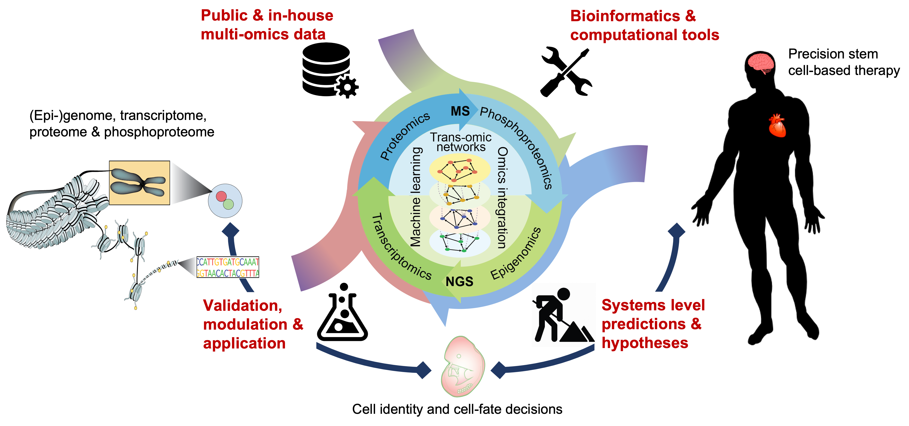

    
<div class="section row">
	<div class="col-md-12">
	<!--<h1 class="heading"><b>Research summary</b></h1><br>-->
        Cells are the fundamental building blocks of all life on earth. In multicellular organisms, these cellular building blocks come in a plethora of types and serve distinct functions to coordinate and support the homeostasis of an organism. Intriguingly, all cell types of an organism share the same genetic code and originate from the same group of pluripotent <b>stem cells</b> that have undergone different cellular fates during development.
        <br><br>
        Research from the last few decades has established that cell identity and cell-fate decisions are determined by underlying <b>trans-regulatory networks (TRNs)</b> comprised of cell signalling, transcriptional, and epigenetic regulations, and the intra- and extra-cellular networks they form. Understanding how TRNs regulate cell identity and interact through cell-cell communications in a spatial-temporal manner is critical for gaining insight into the complex nature of multicellular development. To this end, our research takes a holistic approach and seeks to reconstruct the TRNs, that cut across multiple molecular programs, for modelling cell identity and controlling cell-fate decisions. 
        <br><br>
        Leveraging on recent advances in single-cell omics technologies and our experitise in machine learning, deep learning, and statistical modelling, we develop computational models to reconstruct TRNs in stem cells and model their differentiation to specialised cell types. By employing a multidisiciplinary approach that combines 'dry' (computation) and 'wet' (laboratory) studies at the systems level, we contribute to the following research aims:<br><br>

        <ul>
            <li>Develop computational methods to reconstruct TRNs for modelling cell identity.</li>
            <li>Develop computational methods to guide TRN modulation for controlling cell fate-decisions.</li>
            <li>Generate knowledge on how do different layers of TRNs coordinately regulate cell identity and cell fate-decisions.</li>
            <li>Develop computational framework to assess fidelity of cell conversion for applications such as tissue engineering and stem cell therapy.</li>
        </ul>
        
        
	</div>
</div>


<!--
Our research aims to understand the molecular trans-regulatory networks, comprised of cell signalling, transcriptional, translational, and (epi)genomic regulations, for controlling cell identity and cell-fate decisions. Towards this aim, our lab develop computational and statistical models to reconstruct each layer of the trans-regulatory networks (e.g. signalling networks, transcriptional networks) and characterise their cross-talk in various cellular systems. By employing a multidisiciplinary approach combining 'dry' (computation) and 'wet' (laboratory) works at the systems level, we aim to address the following research questions:<br>

<ul>
	<li>How do different layers of trans-regulatory networks coordinately regulate cell identity and cell fate-decisions?</li>
    <li>How can we accurately predict cell identity and cell fate-decisions based on their trans-regulatory networks?</li>
    <li>How can we modulate trans-regulatory networks to direct cell fate-decisions for applications such as stem-cell therapy?</li>
</ul>


</p>


<p>
<b><font size="+2">
    The Computational Systems Biology lab at Children's Medical Research Institute (CMRI), the Westmead Research Hub (<a href="https://www.cmrijeansforgenes.org.au/research/research-teams/computational-systems-biology">view</a>). Our research group also affiliates with the School of Mathematics and Statistics and is part of the Charles Perkins Centre (CPC) at the University of Sydney (<a href="https://sydney.edu.au/charles-perkins-centre/our-research/research-groups/computational-trans-regulatory-biology-group.html">view</a>).
<br><br>


<p>
<hr>
<b><font size="+2">Openings</font></b><br><br>
Our lab is multi-disciplinary and combines ('dry') computational methods, statistical models, and ('wet') molecular biology approaches for understanding cell identity and cell-fate decisions and for harnessing stem and progenitor cells for stem-cell based therapies. We are located at Children's Medical Research Institute (CMRI) at the Westmead Research Hub. We also holds 'dry' space in both Charles Perkins Centre (CPC) and School of Mathematics and Statistics (Carslaw Building), the University of Sydney. Researchers and students at all levels are welcome to inquire the possibility to join us and work on either 'dry' (computational) or 'wet' (laboratory) projects or some combinations of the two.
<br><br>

<b>Post-doctoral positions</b> funded by NHMRC grant are available for conducting research on the broad area of computational systems biology in stem cells and their therapeutic application. Interested candidates are encouraged to please contact Pengyi Yang, lab head, to discuss potential projects and other details (<a href="mailto:pengyi.yang@sydney.edu.au">pengyi.yang [at] sydney.edu.au</a>)
<br><br>
<b>PhD scholarships</b> are available for both domestic and international candidates. Please see <a href="https://www.cmrijeansforgenes.org.au/research/opportunities-for-research-students/cmri-phd-research-award">link</a> for more details on Children's Medical Research Institute PhD Research Award. For details on scholarships offered at the University of Sydney, please see <a href="https://www.sydney.edu.au/scholarships/">link</a>.
<br><br>
<b>Honours projects</b> are available through either Children's Medical Research Institute, Faculty of Health and Medicine, see <a href="https://www.sydney.edu.au/science/about/our-people/academic-staff/pengyi-yang.html#collapseprofilehonorsopportunities">link</a>; or the School of Mathematics and Statistics, Faculty of Science. For more details regarding projects, please contact <a href="mailto:pengyi.yang@sydney.edu.au">Pengyi Yang</a>.
<br><br>
<b>Summer research scholarships</b> are available for third year undergraduates at both Children's Medical Research Institute and Charles Perkins Centre. For more details regarding potential projects and scholarships, please contact <a href="mailto:pengyi.yang@sydney.edu.au">Pengyi Yang</a>.
<br><br>


<br><br><br>
</p>


<div class="section row">
<hr>
<br><br><br>
<b><font size="+2">Outreach</font></b><br><br>

Our lab is experienced in developing machine learning algorithms and statistical models for analysing the following types of data:
<ul>
    <li>Mass spectrometry (MS)-based:</li>
    <ul>
        <li>Proteomics</li>
        <li>Phosphoproteomics</li>
        <li>Lipidomics</li>
        <li>Metabolomics</li>
        <li>Redox proteomics</li>
    </ul>
    <li>Next-generation sequencing (NGS)-based:</li>
    <ul>
        <li>Bulk RNA-seq and microarray</li>
        <li>Single-cell RNA-seq</li>
        <li>ChIP-seq and RIP-seq of DNA/RNA binding proteins</li>
        <li>RNA Polymerase II, Histones and DNaseI</li>
        <li>Hi-C and ChIA-PET</li>
    </ul>
</ul>
</div>
-->


